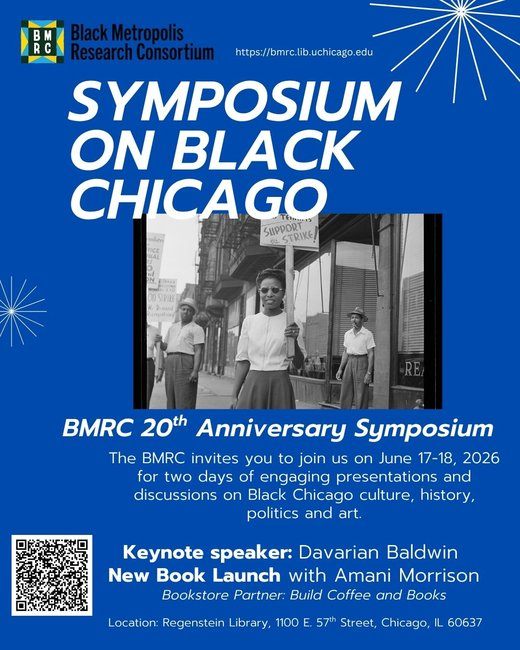

BMRC 20th Anniversary Symposium on Black Chicago
The Black Metropolis Research Consortium welcomes you to two days of deep learning and discussion about Black Chicago History
Day One: June 17, 2026
The symposium will take place at Regenstein Library, 1100 E. 57th Street, Chicago IL 60637 in Room JRL 122
8:30am – 9:00am
Breakfast and on site registration
9:00am -9:15am
Welcome by BMRC Executive Director
Sumayya Ahmed
9:15 – 9:45
“Founding of the BMRC” Oral History Project Launch
Ricky Reyes
10:00am – 11:00 am
Opening Keynote
“Second City No More: How Black Chicago Moved to the Center of History”
Davarian Baldwin (Trinity College)
11:00 -11:10am
Break
11:10am – 12:30pm
Panel One: The Black Metropolis as Medium: Art, Space, and Urban Life
● “Holding the City Together: Black Women as Mediators of the Black Metropolis”
Anaëlle Cama, University of Massachusetts Amherst
● “Chicago’s Legacy of Institution Building: New Negroes Provide Blueprint and Support for BAM”
Thabiti Lewis, Washington State University
● “Staging Black Arts; or, a Geography of the Mind”
Paul Michael Thomson, University of Massachusetts Amherst
● “Cleveland and Chicago’s Black Metropolis: An Examination of Both Cities’ Black Artistic Migration and Connections”
I’Maya Gibbs, University of Massachusetts Amherst
12:30 – 1:00 pm
Lunch & Community Building
1:00pm – 2:20pm
Panel Two: Surveillance, Policing and Public Space
● “Pavement Politics: Sidewalks, Surveillance, and Black Mobility in Chicago’s Built Environment”
Jaida Johnson, Carnegie Mellon University
● “The Black and Red Squad of Chicago: Police Violence toward Black Radical Women during the Great Depression”
Melissa Ford, Slippery Rock University
● “The End of the Nightstick: The Fight to Bring the Jon Burge and the Chicago Police Department’s Torture Program to Light”
Adam Hart, Media Burn Archive
2:25pm – 3:45pm
19th and early 20th Century Chicago – Place and Image
● “From Spectacle to Evidence: Ida B. Wells, the World’s Columbian Exposition, and Black Chicago as Counter-Spectacle”
Xavier Wills, Williams College
● “Now at the Forum: Class, Culture and the Built Environment ”
Harold Barnett, Emeritus professor, University of Rhode Island
● “Generative and Discursive Spaces: Chicago’s African American Commercial Photographers”
Amy Mooney, Columbia College Chicago
4:15pm – 5:15pm
Optional Tour of BMRC Exhibition, The Ways We Remember for Symposium Attendees (offsite at 320 E. 43rd)
Day Two: June 18, 2026
The symposium will take place at Regenstein Library, 1100 E. 57th Street, Chicago IL 60637 in Room JRL 122
9:00am- 9:30 am
Breakfast/ Welcoming
9:30am – 10:30am
Book Launch with Amani C. Morrison (Georgetown University) in conversation with Adrienne Brown (University of Chicago)
A Kitchenette to Fit Your Needs: Housing Chicago’s Great Migration (New York University Press, 2026)
Book Store Partner: Build Coffee and Books
10:30am – 11:50am
Black Data: Libraries, Archives, Mapping and AI
● “Collective Labors: Black Women Librarians and Information Networks in Early Twentieth-Century Chicago”
LaVerne Gray, Syracuse University
● “AI, Archives, and the Afterlife of Data: Preserving Black Stories Ethically”
Kyla Williams Tate, Cook County Illinois Government
● “Footprints to Futures: Visualizing Demolished Black Neighborhood Space Around The Forum in Bronzeville”
Malaika Bergner, University of Illinois Chicago
Chair & Commentator: Dr. Kimberly Black-Parker, Chicago State University
12 noon – 12:30pm
Lunch & Community Building
12:30 – 1:50pm
Sounds of Black Chicago
● “Sun Ra’s Chicago Period (1946-1961): Broadsides, Print, and Archive as Sonic Prophecy”
Lee Nah
● “Cauleen Smith’s Arkestral Marching Band (2010): Activating Sun Ra’s Archive as South Side Coalitional Repertoire”
Alejandro Cueto, University of Chicago
● “Still Seatin’ Mapping the Placemaking Practices of the Black House Music and Cultural Community of Chicago”
april l. graham-jackson, University of Chicago
Chair & Commentator: Erik Gellman, University of North Carolina, Chapel Hill
2:00pm – 3:00pm
Diasporic Identity in Chicago
● “Black University: Oluwaseyi Adeleke’s Pedagogy by Design”
Kale Serrato Doyen, University of Pittsburgh
● “No Sitting on the Fence: Elizabeth Calloway and Afro-Filipino Chicago”
Sarah Steinbock-Pratt, University of Alabama
3:00pm – 3:15pm
Break
3:15pm – 4:35pm
Black (Print) Metropolis: Chicago’s Black Press Pasts and Futures
● Kim Gallon, Brown University
● Jane Rhodes, University of Illinois Chicago
● E. James West, University College London
4:35pm – 5:00 pm
Concluding Remarks
“In Them We Exist: The Power of Black (Chicago) Archives in Perilous Times”
Skyla Hearn, Special Collections Archivist at Johnson Publishing Company Archive
(Getty Research Institute in collaboration with the National Museum of African American History and Culture)
Register for the Symposium
Please see the information below for registration fees and payment methods.
(Suggested) Standard Registration – $100 for both days
$50 for one day registration
(Suggested) Student Registration – $50 for both days
$25 for one day registration
Not able to pay? Register and Join us anyway!
(*Breakfast and Lunch provided to registered participants on both days)
Registration for the symposium is in TWO parts:
1 Complete the form here
2 Pay the registration fee here (Select “Membership dues and event fees” )
Why is the BMRC charging a registration fee?
The BMRC is a non-profit organization hosted at the University of Chicago. Its programs are funded by funds obtained via donation or grant funding. Registration fees will go to help the BMRC recover the costs of putting on this symposium.